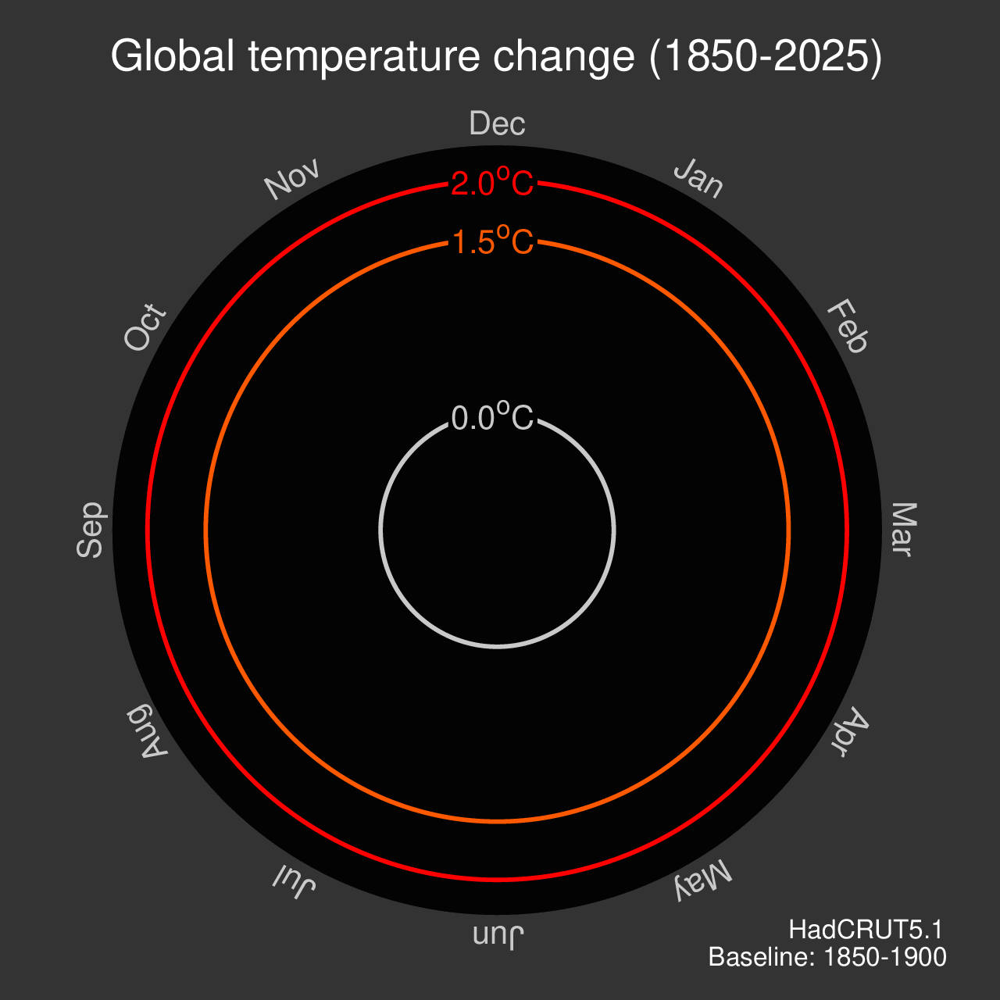

Climate Change Spiral Visualizations 2022
La Climate Change Spiral Visualizations (2022) nació de la necesidad crítica de romper la barrera entre los datos científicos complejos y el entendimiento del público. El climatólogo Ed Hawkins ideó este concepto para sustituir las gráficas de líneas tradicionales, demasiado académicas, por una narrativa visual que cualquier persona pudiera "sentir", intentando resolver no solo la falta de información, sino la falta de percepción de urgencia.
A través de una versión sencilla de 2016 que Hawkins publicó en Twitter y que ha evolucionado hasta las versiones tridimensionales de la NASA, la pieza responde con claridad el estado de salud de nuestro planeta, expresado mediante la anomalía de la temperatura global y situándonos en un eje temporal que va desde 1850 hasta la actualidad.

Análisis de Información
Basándonos en los 5 modos en la información podemos concluir que el apropiado para el gráfico de Hawkins sería Estructura de Interacción, la cual define la información como una organización de datos que permite a un agente (humano o máquina) detectar diferencias y entender su entorno. El cual vendría a ser todo el punto de este gráfico, retratar de una forma clara y con urgencia el cambio climático.
Análisis Técnico
La Ley 19.628 protege al individuo del mal uso de su identidad, pero la ciencia climática opera en una escala donde el individuo se desvanece para dar paso a la especie, por lo tanto, el gráfico de Hawkins se construyó en base a datos estadísticos. Según el Artículo 2°, letra e) de esta ley, el dato estadístico es aquel que "no puede ser asociado a un titular identificado o identificable". También es relevante destacar el Artículo 2°, letra g), que define a los datos sensibles como “aquellos datos personales que se refieren a las características físicas o morales de las personas o a hechos o circunstancias de su vida privada o intimidad, tales como los hábitos personales, el origen racial, las ideologías y opiniones políticas, las creencias o convicciones religiosas, los estados de salud físicos o psíquicos y la vida sexual”. Sabido esto, es imposible el involucramiento de datos personales o sensibles en la visualización del cambio climático, ya que la temperatura de la estratosfera o del océano no revela la intimidad de nadie.
Legado
Si bien la representación en espiral tridimensional ha tenido escasa adopción reciente, su lógica visual persiste en adaptaciones bidimensionales que conservan sus principios estructurales: tiempo como rotación, magnitud como distancia radial y color como variable semántica.
Un caso representativo es el software sigminer, desarrollado en genómica oncológica. Su gráfico de espiral opera como mapa de priorización clínica: cada punto corresponde a una posición genómica, la distancia radial codifica la frecuencia de una mutación en la población estudiada y el color indica la severidad del daño funcional. Esto permite al oncólogo reducir el ruido de grandes volúmenes de datos genómicos y concentrarse en las mutaciones con mayor relevancia clínica, orientando tratamientos específicos para cada perfil tumoral.

Fuentes y Referencias
Animated spiral of changes in global temperature (1850-2025). (n.d.). https://www.rgs.org/about-us/what-is-geography/geovisualisation/global-temperature-animated-spiral.
Climate spirals. (n.d.). Climate Visuals. https://ed-hawkins.github.io/climate-visuals/spirals.html
Harvey, C. (2021, October 27). Scientists have found a perfect illustration of how the climate is spiraling ‘out of control.’ The Washington Post. https://www.washingtonpost.com/news/energy-environment/wp/2016/07/28/these-climate-spirals-perfectly-illustrate-the-human-hand-in-global-climate-change/
Del Congreso Nacional, B. (2023, May 9). Biblioteca del Congreso Nacional. www.bcn.cl/leychile. https://www.bcn.cl/leychile/navegar?idNorma=141599
Mutational Signature Miner in r. (n.d.). https://shixiangwang.github.io/sigminer/#arrow_down-download-stats